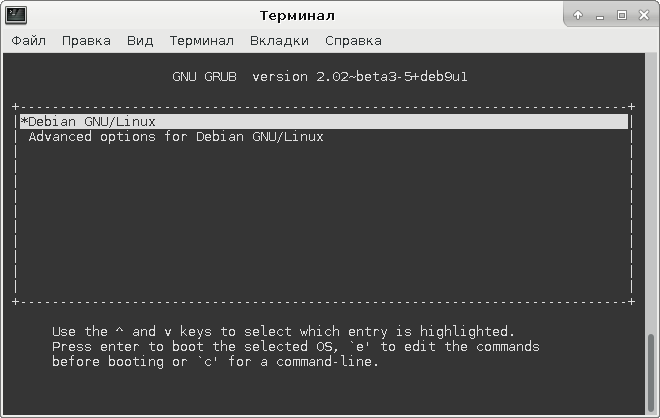
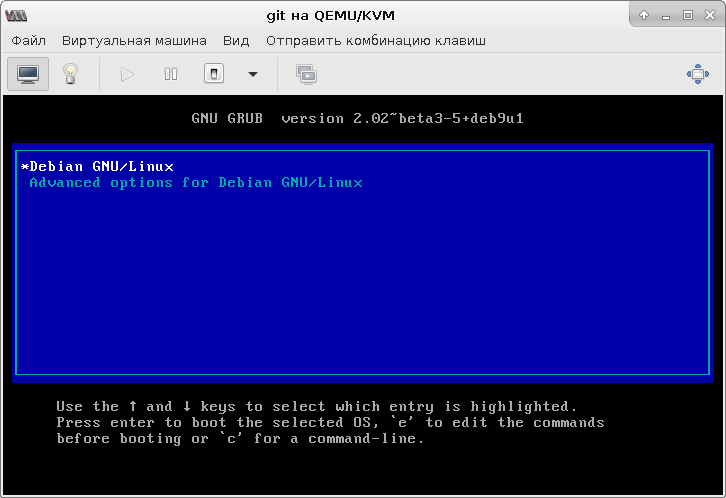

Ранее я описывал установку и настройку virt-manager - графической программы для администрирования виртуальных машин, работающих под управлением KVM, Xen и других гипервизоров. Для управления начинкой виртуальных машин, как правило, достаточно SSH. Однако, виртуальная машина может оказаться не доступной по SSH из-за неполадок в работе сети или ошибок в сетевых настройках самой виртуальной машины. В таком случае можно подключиться к консоли виртуальной машины, однако и virt-manager может оказаться не доступным. Вместо virt-manger можно попробовать воспользоваться virsh, но как попасть в текстовую консоль виртуальной машины, если она не была настроена заранее?
Чтобы подстелить соломки, можно заранее настроить текстовую консоль в каждой из виртуальных машин. В случае недоступности виртуальной машины по сети или отсутствии virt-manager на ближайшем компьютере достаточно будет подключиться по SSH к компьютеру, на котором работает гипервизор, на нём запустить virsh, а оттуда уже попасть в консоль виртуальной машины. Займёмся настройкой.
Запускаем от пользователя root команду virsh:
# virsh
В запущенной оболочке virsh проверяем, есть ли у виртуальной машины текстовый терминал (вместо <vm> нужно указать имя виртуальной машины):
ttyconsole <vm>
Если команда ничего не вывела, значит виртуального терминала нет и его нужно настроить. Для этого отредактируем конфигурацию виртуальной машины, выполнив в оболочке virsh команду:
edit <vm>
Если в файле есть секция console, имеющая такой вид:
<console type='pty'> <target type='virtio' port='0'/> </console>
То её нужно привести её к следующему виду:
<serial type='pty'> <target port='0'/> </serial> <console type='pty'> <target type='serial' port='0'/> </console>
Если же секцию console найти не удалось, то нужно вставить указанный фрагмент вовнутрь секции devices.
Дальше нужно остановить виртуальную машину и запустить её снова. Для этого в оболочке virsh можно выполнить следующие две команды:
shutdown <vm> start <vm>
После пересоздания виртуальной машины, в ней появится последовательное устройство.
Когда виртуальная машина запустится, нужно зайти в неё через графическую консоль (или через SSH) и выполнить две команды, которые включат терминал на виртуальном последовательном порту:
# systemctl enable serial-getty@ttyS0.service # systemctl start serial-getty@ttyS0.service
После этого появится возможность подключиться к этому терминалу через virsh, при помощи команды следующего вида:
console <vm>
Однако, этим терминалом можно будет пользоваться только после загрузки системы. Нельзя будет увидеть ни меню загрузчика, ни сообщения, выводимые ядром операционной системы в процессе его загрузки. Чтобы терминалом можно было воспользоваться до загрузки операционной системы, нужно настроить консоль в загрузчике и в ядре.
Поскольку загрузчик передаёт опции ядру, то для настройки консоли в загрузчике и в ядре Linux понадобится отредактировать только конфигурацию загрузчика.
Для настройки консоли в загрузчике, нужно в файле /etc/default/grub добавить или заменить следующие опции:
GRUB_TERMINAL="serial console" GRUB_SERIAL_COMMAND="serial --unit=0 --speed=115200 --word=8 --parity=no --stop=1"
Мне потребовалось поискать в интернете примеры настройки, при которых консоль на последовательном порту не вызывала бы отключение графической консоли. Указанный выше вариант позволяет пользоваться меню GRUB и через последовательную консоль, и через графическую.
Для настройки консоли в ядре Linux нужно в том же файле /etc/default/grub найти опцию GRUB_CMDLINE_LINUX и добавить в неё следующие опции ядра:
console=tty0 console=ttyS0,115200n8
В моём случае никаких опций ядру не передавалось, поэтому строчка приняла следующий вид:
GRUB_CMDLINE_LINUX="console=tty0 console=ttyS0,115200n8"
Теперь нужно применить изменения в конфигурации GRUB при помощи следующей команды:
# update-grub
Для того, чтобы убедиться в работоспособности консоли, можно подключиться к графической консоли и консоли на последовательном порту виртуальной машины и отправить её в перезагрузку. В моём случае меню загрузчика в обеих консолях выглядело следующим образом:
 Ниже показан процесс загрузки системы на обеих консолях: